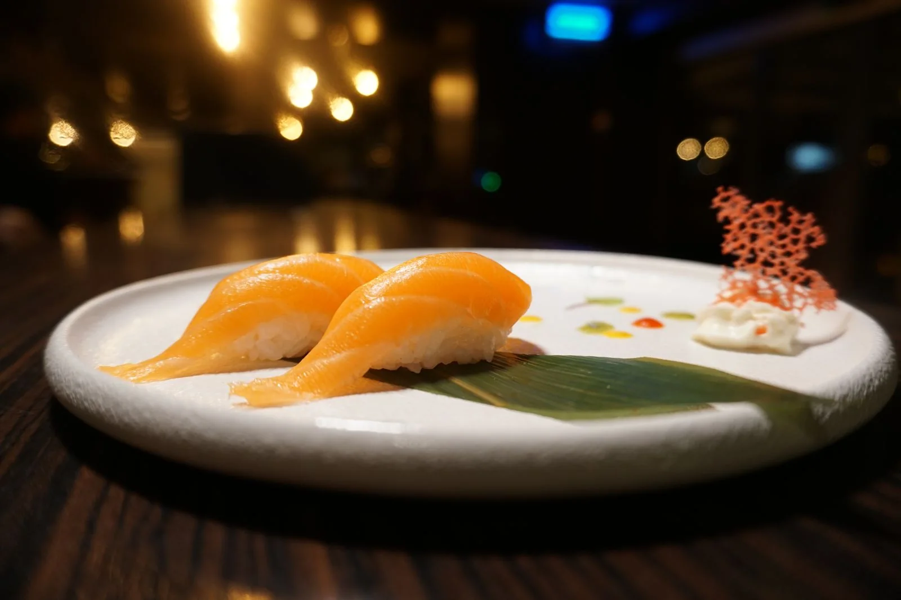
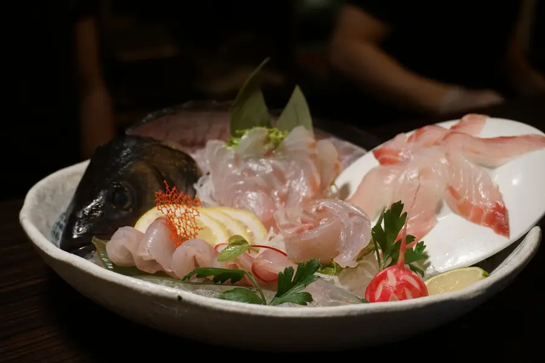
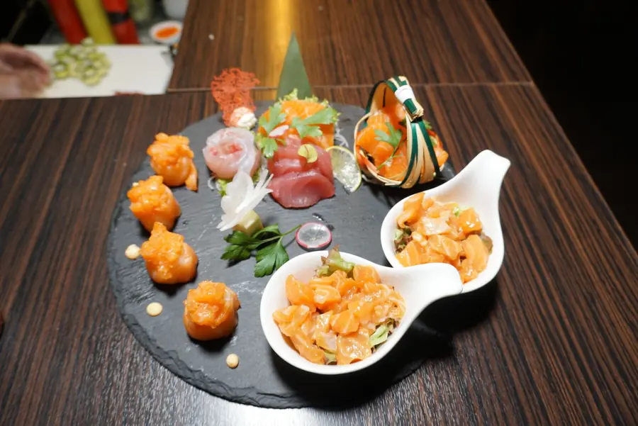
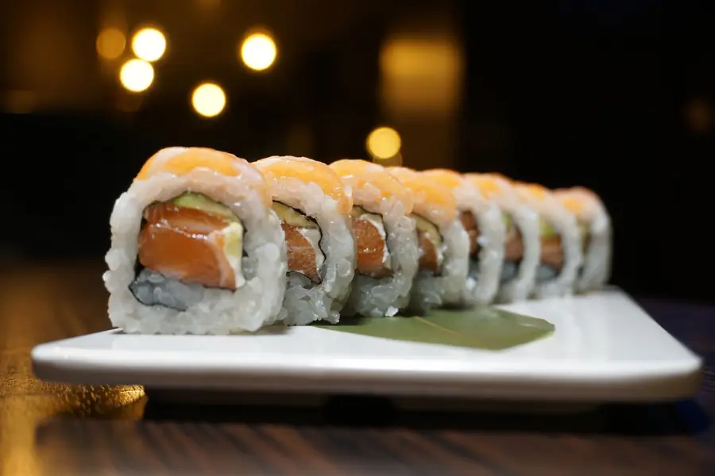
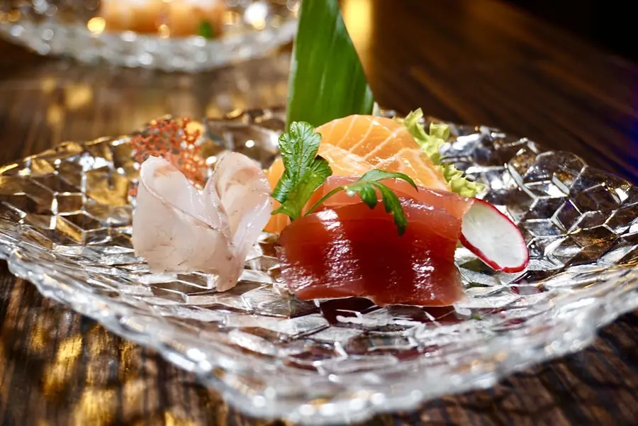
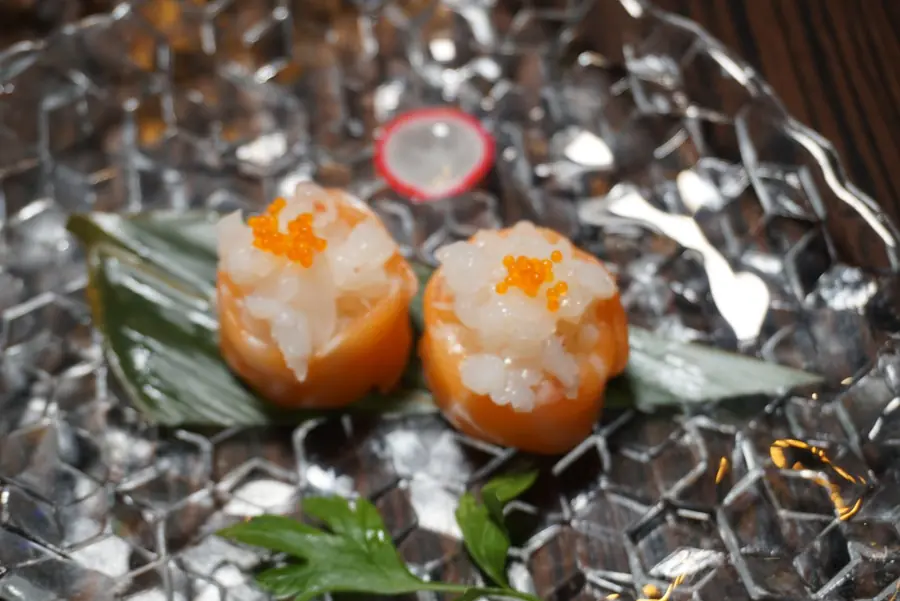
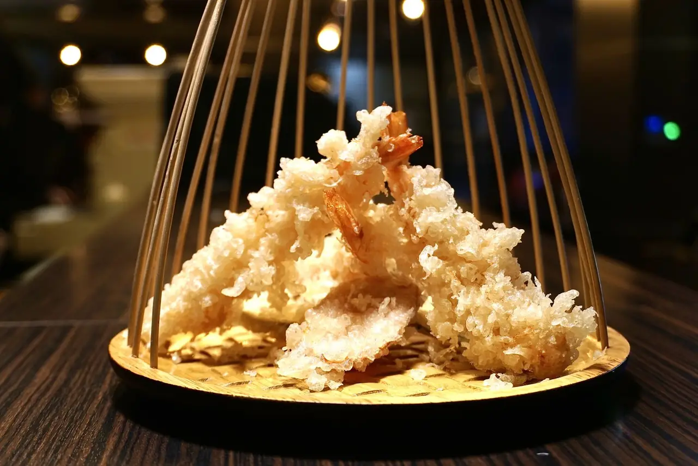
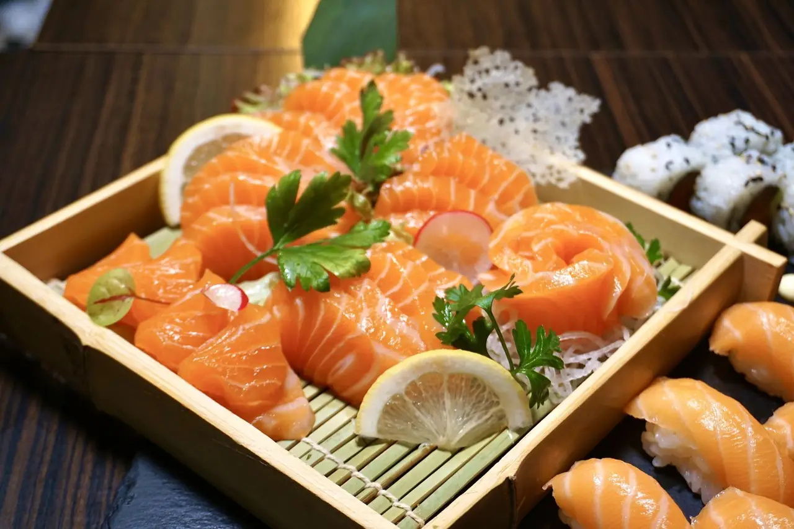

Dodici posti al banco, un solo coltello, nessuna fretta Porta Nuova, Milano
Kaname—L'arte del togliere
Milano, IT—00:00:00
01Ristorante
Un banco di hinoki lungo nove metri. Dodici sgabelli. Il pesce arriva la mattina e finisce la sera.
Due turni · 18:30 e 21:15
Solo su prenotazione
Rigore, pazienza e attenzione sono il nostro modo di dire quello che resta quando si toglie il superfluo.




02Filosofia
Kenji Morimoto
Trent'anni dietro un banco, i primi dieci a lavare riso. Morimoto ha imparato a Kanazawa e a Tokyo, poi ha scelto Milano per il pesce del Tirreno e dell'Adriatico, che taglia con lo stesso rispetto che riserva al tonno di Ōma.
Al banco parla poco. Guarda come mangiate il primo nigiri e regola i successivi: più riso, meno aceto, un minuto in più di riposo.

04Eventi privati
Una sera solo vostra, al banco o in sala, per chi conta davvero.

Kaname si prenota per intero, solo la sala, o solo il banco. Il menù si costruisce insieme, così come i fiori, la musica e gli abbinamenti.
| Esclusiva totale | 26 seduti · 40 in piedi |
|---|---|
| Sala | 14 seduti |
| Banco Hinoki | 12 seduti |
«Non serve dire che ci tieni, se ogni dettaglio lo dimostra.»